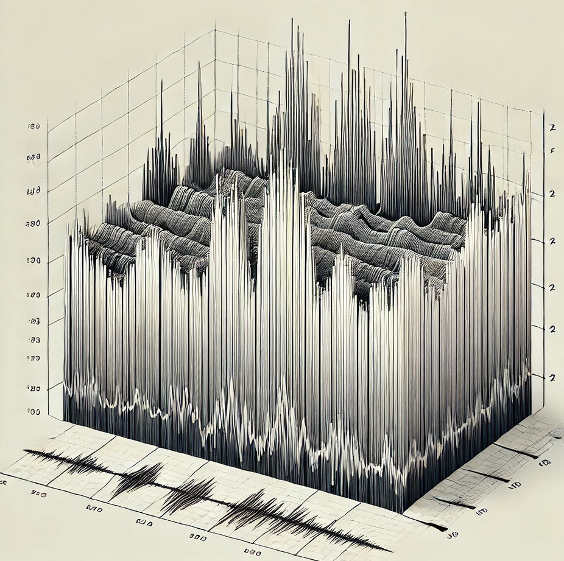

Our Services
- Processing and inversion of fiber optics Distributed Acoustic Sensing (DAS) data
- Physics-informed neural networks (PINN) for data-driven modeling and prediction
- Physics-based software packages for custom simulation and analysis
- Microseismic analysis
- Digital rock physics
- Well hydraulics
- Reservoir characterization and simulation
- Seismic interpretation and inversion for reservoir monitoring
- Geomechanics and fracture modeling
- Machine learning for subsurface data analysis
- Programming and software development for custom data analysis, modeling, and simulation tools
